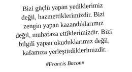

“Hafta sonu brunch’a nereye gidiyorsunuz?”
“Hiç kimsenin bilmediği çok kaliteli bir brunch mekânı buldum?”
“Ben brunch gördüm!”
“Benim babamın brunch’ı var!” gibi cümlelerin kurulmadığı profesyonel ekosistemlerde azot devri tamamlanmaz, biyosfer çatlak bir duruş sergiler. O sebeple brunch profesyonel yaşam formlarının habitatı için bir yan unsur değil, bir tamamlayıcı unsurdur.
Brunch Öncesi
Brunch, profesyonel bir beyaz yakalı için sürekli ve standart bir etkinliktir. Gidileceği kesindir, sadece kiminle ve nereye gidileceği hususunda organizasyon yapılır.
Brunch’a, öncelikli tercih olarak kariyerce kıdemli ve talent olarak gelecek vaat eden kişiler, akabinde ilişki geliştirmek istenen güçlü ve / -veya zengin bir profil, akabinde aynı seviyedeki iş arkadaşı nam-ı diğer eşdüzey, o hafta bunların hiçbiri temin edilemediği takdirdeyse iş ortamından bağımsız eş dost ile gidilir.
Brunch’a gidilmeden önce mekâna ve brunch deneyimine dair teaser çalışması yapılır. Menü hakkında, mekânın yeri, manzarası ve ne kadar mükemmel hizmeti olduğuna dair online ortamda potansiyel katılımcılara mümkünse görselli bilgi verilir.
Gitmeden önce rezervasyon yaptırmak çok profesyonel bir harekettir. Özellikle rezervasyonun kendi adınıza değil; sekreter, takım asistanı gibi bir kişinin adına yaptırılmış olması daha çok puan toplar. Profesyonel ismin, rezervasyon defterlerinde sakız olmasına izin vermemek gerekir. Unutulmamalıdır ki o bir isim değil, korunması, kollanması ve yaşatılması gereken bir markadır.
Gidilecek mekân kesinlikle herkesin gittiği bir mekân olmamalıdır. Prestijli ve birçok kişinin “Buraya gidersek bize hayvan gibi hesap çakarlar, denemeyelim bile!” diyeceği, Foursquare’de check-in olunduğunda “Oha be olm Sarplar ...’ya gitmişler” dedirtecek bir mekân olmalıdır.
Gidilecek mekânın manzarası çok önemlidir. Engin deniz manzarası tercih sebebidir. İstanbul’da boğazın sırtlarına saklanmış mekânlar itinayla ayıklanmalı, keşfedilmelidir.
Gidilecek mekânın manzarası, mimarisi ve menüsüyle Instagram kadrajlarının ağzını sulandırması çok önemlidir.
Gidilecek mekânda mutlaka çocuklar için özel bir alan, bu alanda aktif çalışan ve çocuklarla ilgilenecek profesyonel çalışanlar, çocukları eğlendirmek için palyaço, pamuk helvacı, baloncu, wafflecı, tasocu, pikaçucu, pepeci, iPad’ci, PSP’ci, Birkenstock’çu gibi aktörlerin mutlaka yer alması gerekir.
Brunch mekânına giderken giyilecek kıyafetler konusunda rivayetler muhtelif olup, profesyonel bir beyaz yakalıya yakışan “casual skewed smart casual” bir “dress code”u nitelikli ve pahalı güneş gözlükleri ile birlikte tercih etmektir. Eşofman, şort, tayt, kapri vb ile brunch’a katılmak hiç profesyonel değildir.
Brunch mekânına giderken amele gibi bir kamyon gazete dergi alınarak gidilmez. Gidilecek mekânda okunacak tüm gazeteler ve profesyonel dergiler zaten bulunmaktadır. Aksi takdirde mekân tercihi yanlıştır.
Gidilecek mekân seçilirken sık sık ünlü kişilerin de uğradığı bir mekân olmasına dikkat edilmelidir. Kimlerle aynı kadraja girileceğinin ziyadesiyle önemli olduğu, profesyonel hayatın her anında asla unutulmamalıdır.
Brunch mekânında araç mutlaka valeye verilir. Mekâna yakın bir ara sokağa park edip yürüme kafası hiç profesyonel değildir.
Mekândan ayrılırken “Bozuk yok!” söylemi ile hızlıca arabaya binip ilerlemeye çalışmak büyük prestij kaybına yol açar.
Brunch’a sabahın köründe gitmek çok amatör bir duruştur. Tercihen 10:30–12:00 saatleri arasında brunch mekânını teşrif etmek, “Akşam hayvan gibi eğlenmişler, hem işlerinde çok başarılılar hem de eğlenmeyi biliyorlar, kendilerine vakit ayırıyorlar” mesajını çok net verir. “Work hard, play hard” düsturu temsil edilir.
Serpme brunch menüsü veren özel fırsat kampanyası yapmış “1000 çeşit kahvaltılık 20 TL” gibi mekânlara gitmeye tenezzül etmek; profesyonel beyaz yakalıya “Bu işyerinde asgari ücret uygulanmaktadır” muamelesi yapmaktan farksızdır.
Brunch Esnasında
Açık büfe sırası uzaktan kesilir. “Genel olarak kalabalık mı? Hangi ürünler daha çok tüketiliyor? Omlet pişirme alanında sıra uzun mu?”
Açık büfe etrafı tenhâlaşınca genele göz atılır ve alınması istenen yiyecekler garsona söylenir, tabak garson tarafından organize edilerek masaya getirilir. Böylece açık büfe olmasına rağmen, “Olm herife bak! Biz eşek gibi elimizde tabakla gidip geliyoruz, adam tabağı garsona yaptırdı bir de servis ettiriyor” algısını diğer katılımcılarda oluşturmak çok önemlidir.
Genel olarak açık büfedeki hamur işlerinden uzak durulur. Tabağa hayvan gibi poğaça, börek, pide, lahmacun, katmer, lavaş vs doldurmak hiç şık değildir. Unutulmamalıdır ki, bir profesyonelin hayatı entegre bir süreçtir. Bugün brunch’ta rastlayacağınız bireyler yarın spor profesyonelleri olarak farklı bir mekânda farklı bir deneyimle karşınıza çıkabilir. Markayı tutarlı konumlandırmak çok önemlidir.
Öncelikle yeşillik çeşitleri (bilumum otlar), domates, salatalık ve yağsız peynir çeşitleri deneyimlenmeli, yanında da protein olarak sadece yumurtanın beyazından yapılmış sebzeli omlet (menemen, pastırmalı yumurta, sucuklu yumurtanın profesyonel duruşu zedeleme ihtimali çok yüksektir) tercih edilmelidir. Böylece “Olm herif brunch’a semer yüküyle para vermiş gelmiş sadece ot yiyor, ne nefis terbiyesi var adamda be!” algısı da zihinlerde tamamlanmış olur.
Brunch menüsünde olmamasına rağmen profesyonel beyaz yakalının yabancı coğrafyalarda tutku ile bağlandığı “Egg Benedict”i sipariş etmesi büyük fark yaratır. Bu tarz hareketler, kadrosunda karizmatik bir 10 numara bulunduran büyük kulüplerin her zaman maça 1-0 galip başlamasına benzer, aradaki farkın altını çizer.
Kepek ekmeği ya da tam tahıllı ekmek mutlaka kızartılarak alınmalıdır.
Kahvaltıya granola ile başlamak çok şık dururken, üçüncü sınıf cornflakes’e beşinci sınıf sütleri doldurup çakma bir cornflakes deneyiminden sonra böreğe abanmak hiç profesyonel değildir.
Tercihen brunch deneyimi kademe kademe zamana yayılarak yaşanmalıdır. Bir seferde açık büfeye dört tabakla saldırıp, masayı doldurup, her şeyi yiyip, akabinde Türk kahvesi yanında soda söyleyerek kalkmak hiç hoş değildir.
Brunch esnasında ana kalemler tüketilirken, içecek olarak standart portakal suyu yerine; elma, havuç vb meyvelerin karışımından oluşan daha sağlıklı meyve suları tercih edilir. Akabinde mutlaka sadece filtre kahve deneyimlenmelidir. Çünkü beyaz yakalı bir profesyonel sadece filtre kahve içmediği takdirde kesinlikle güne başlayamaz, bünyesi kaldırmaz.
Brunch sonrasında tabakta mutlaka bir şeyler bırakılmalıdır. Tabağı sıyırmak ve kendini görebilecek parlaklıkta bir tabak bırakmak garsonlar nezdinde de “Oha, olm adam her şeyi silip süpürmüş” nidaları ile karşılanır. Bu kuralı bir şuuraltı mekanizmaya bağlamak henüz mümkün olmadığı gibi, yok saymak da o derece imkânsızdır.
Brunch esnasında sürekli sağdaki soldaki masalar gözlemlenir. Gözlem esnasında: “Hangi şirket yöneticileri gelmiş? Nasıl bir aile yapısına sahipler? Doğru kıyafet / aksesuar tercihi var mı? Hangi araba ile gelmiş? Güzel bir aile yaşantısı var mı? Hayvan gibi mi yiyor, adam gibi mi? Duruşu gerçekten profesyonel mi? Bir merhaba demek şık durur mu?” gibi soruların cevabı aranır.
Brunch’a çocukları ile gelen profesyoneller, çocuklarını profesyonel markalarla giydirmiş ve profesyonel aksesuarlarla donatmış olmalıdırlar.
Çin malı olduğu karşı mahalleden belli olan oyuncaklar kesinlikle bir profesyonelin çocuğu ile yan yana durmamalıdır.
Bebek sahibi profesyonellerin, bebek arabaları mutlaka fark yaratan, valenin alıp park etmek isteyeceği cinsten olmalı, taşınan bebek malzemeleri ve malzemelerin taşındığı çanta mutlaka yurtdışındaki havalı bir outlet’ten alınmış olmalı ve Türkiye’de asla bulunmamalıdır. Mama sandalyesi olarak kesinlikle gidilen mekânın mama sandalyesi kullanılmamalı, onun yerine profesyonel çiftimizin yanlarında getirmiş olduğu havalı markaya sahip ergonomik mama sandalyesi kullanılmalıdır.
Çocukların hepsinin elinde ayrı ayrı iPad’ler ve / veya PSP’ler olmalı ve mutlaka bu çocuklar herkesin oynamadığı daha stratejik oyunları oynuyor olmalıdırlar. Bir iPad’i iki-üç çocuğun paylaşması, eski model iPad kullanımı, yanında boyama kitabı kalemi getirmek, bahçede yağ satarım bal satarım veya uzuneşek oynamak hiç profesyonel hareketler değildir.
Brunch mekânına, fark yaratan profesyonel dostu petlerle gelmek ve yeteneklerini tüm katılımcılara göstermek, pet dünyasına dair entelektüel derinliğini (türü, cinsi, yedi ceddi, bu türlerin genel özellikleri, vb) göstermek de çok profesyonel bir duruştur. Profesyonel dediğin hayvanına da gereken özeni gösterir, evcil hayvanın profesyoneli gerekli mecralarda temsil eden önemli bir artı değer olduğu akıldan çıkarılmamalıdır.
Mekânda ünlü birileri varsa (ki yoksa yanlış mekândasınız demektir); ünlülerin kıyafetleri, televizyona göre daha zayıf olduğu, televizyonun şişman gösterdiği, selüliti olup olmadığı, kıyafet ve aksesuar olarak kullandığı markalar, birlikte olduğu kişi ile iletişimi, çocukları varsa kendi mi bakıyor her şeyi bakıcı mı yapıyor gibi konular netleştirilmeye çalışılır, bu netleştirme süreci brunch masası ve sonrası muhabbetleri için büyük bir malzemedir.
Brunch esnasında garsondan gazete dergi istemek çok kritik bir konudur. Genel olarak herkesin okuduğu bir gazete isteyip akabinde “Bunun pazar eki yok mu?” diye sormak, alınan gazetede çengel bulmaca çözmek hiç şık durmaz. Profesyonel duruşu sağlamak için, bir adet iş dünyasına dair, bir adet düşünce dünyasına dair, bir adet de yabancı gazete talep etmek gerekir. Bu gazete üçlemesinin profesyonel imaj karmasındaki yeri pek mühimdir.
Brunch Sonrası
Post-brunch shopping deneyimi, profesyonel iş dünyasında belli kıdem düzeyinin üzerindeki herkesin maaile tercih ettiği bir husustur.
Post-brunch denize açılma deneyimi, güneşlenme, denize girme, ilerleyen saatlerde ızgara balık profesyonel duruşun sürdürülebilirliğini garantiler.
Post-brunch konsere / etkinliğe gitme deneyimi, eğlencenin dibi ile etkileşime girme ve sonrasına, pazartesi sendromuna pre-antrenman yapmak açısından çok önemlidir.
Post-brunch profesyonel arkadaşların evine giderek toplu Play Station oynama deneyimi, profesyonel hayattaki kâğıt üzerindeki iletişim süreçlerine sos katar, süreçleri perçinler, derinleştirir.
Brunch ortamlarının, özgürlükle, ruhun serinliklere yelken açmasıyla filan alakası yoktur, esasen Neo’nun cadde üstünde makarna yediği lokanta kadar gerçektir ya da sanalın bizden gerçekliği saklamak için elinden geleni ardına koymadığı koca bir illüzyondur.
